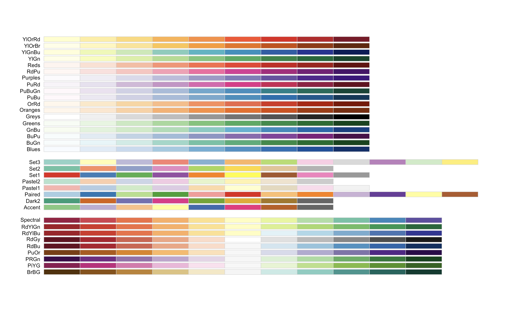
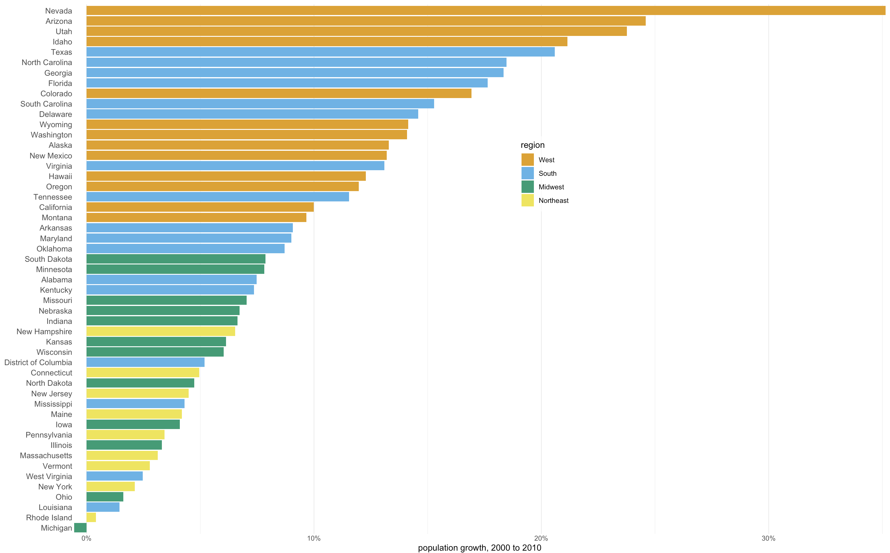
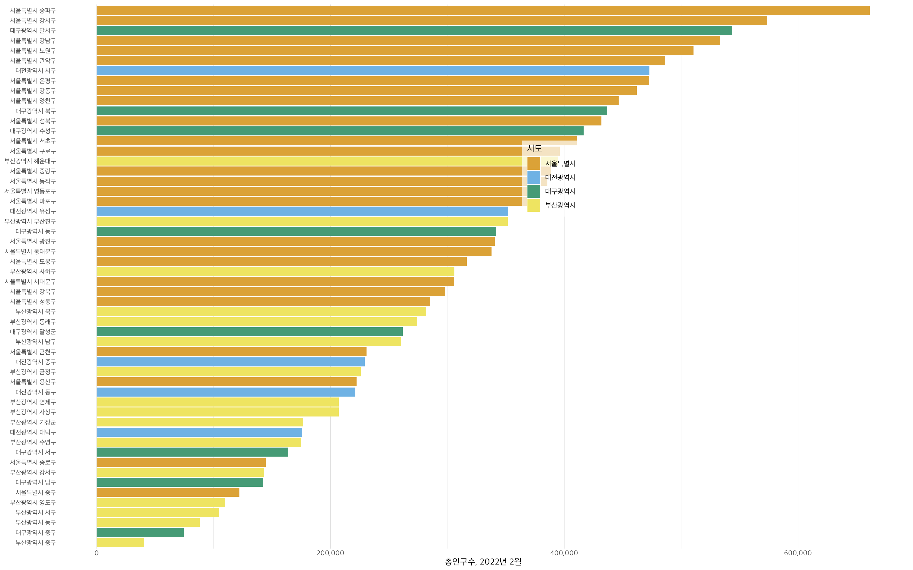
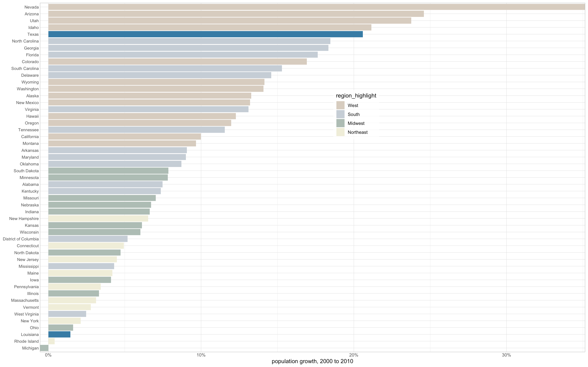
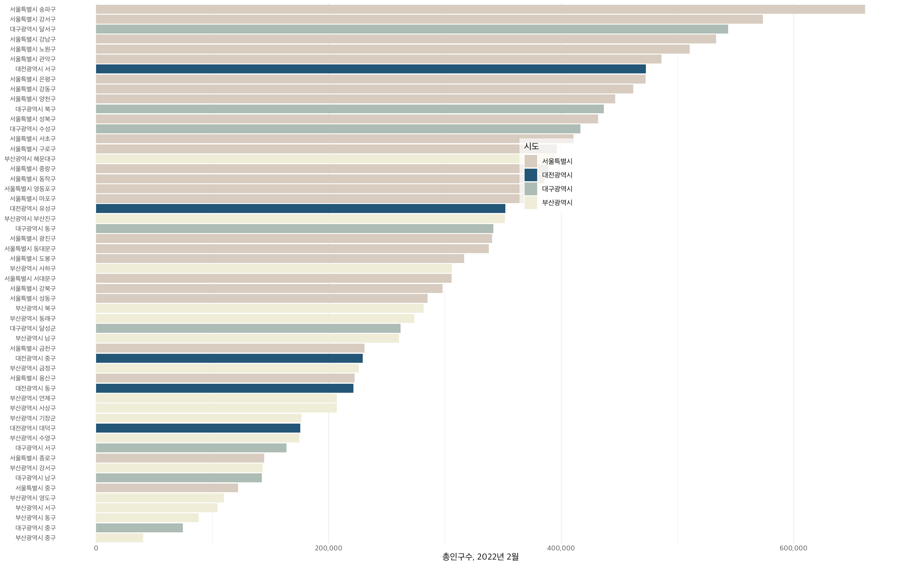
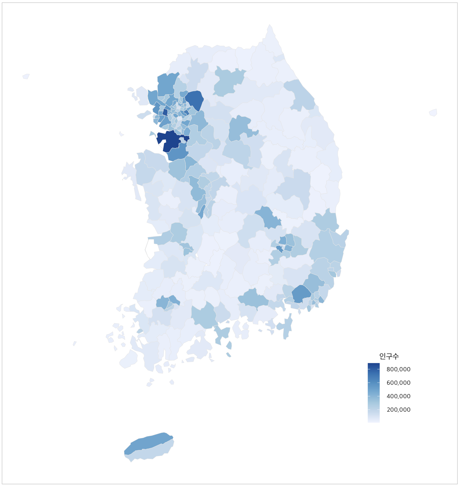
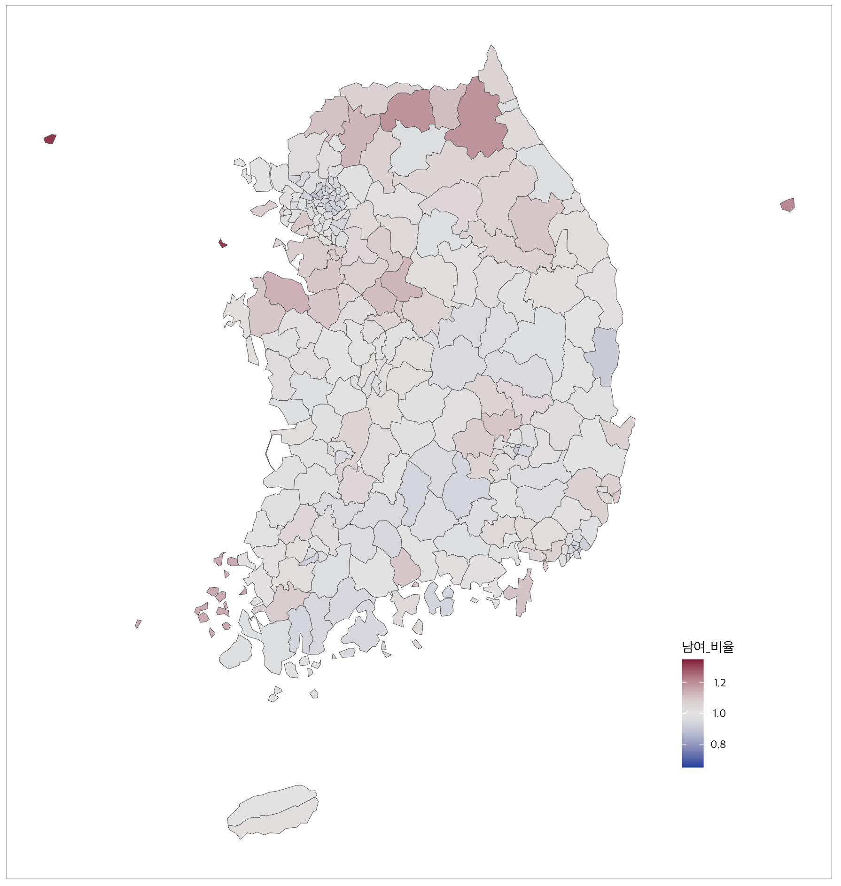
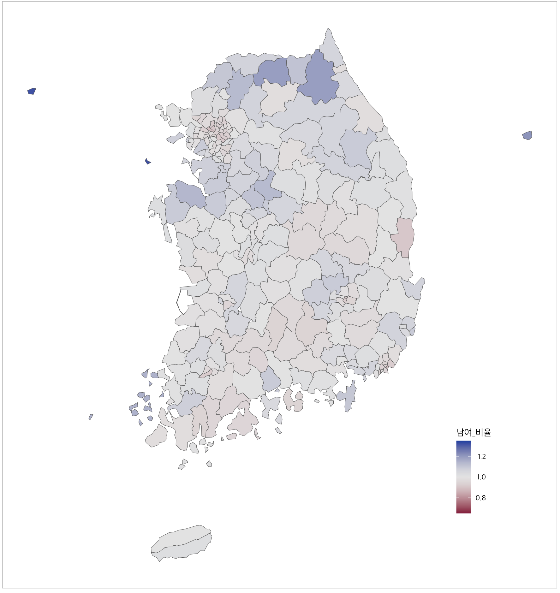

Color scales
code
visualation
R
데이터 시각화 5주차 실습
# 패키지 로드
library(ggplot2)
library(dplyr)
library(colorspace)### ColorBrewer palettes
RColorBrewer::display.brewer.all()
# 데이터 로드
US_census <- read.csv("/Users/jungwoolee/Desktop/college/Data Visualization/data/US_census.csv")
US_regions <- read.csv("/Users/jungwoolee/Desktop/college/Data Visualization/data/US_regions.csv")popgrowth_df <- US_census %>% left_join(US_regions) %>%
group_by(region, division, state) %>%
summarise(pop2000 = sum(pop2000, na.rm = T),
pop2010 = sum(pop2010, na.rm = T),
popgrowth = (pop2010 - pop2000)/pop2000,
area = sum(area)) %>%
arrange(popgrowth) %>%
ungroup() %>%
mutate(state = factor(state, levels = state),
region = factor(region, levels = c("West", "South", "Midwest", "Northeast")))# ggplot 그리기
region_colors <- c("#E69F00", "#56B4E9", "#009E73", "#F0E442")
ggplot(popgrowth_df, aes(x = state, y = 100*popgrowth, fill = region)) +
geom_col() +
scale_y_continuous(name = "population growth, 2000 to 2010",
labels = scales::percent_format(scale = 1),
expand = c(0,0)) +
scale_fill_manual(values = region_colors) +
coord_flip() +
theme_light() +
theme(panel.border = element_blank(),
panel.grid.major.y = element_blank(),
axis.title.y = element_blank(),
axis.ticks.length = unit(0,"pt"),
axis.text.y = element_text(size = 10),
legend.position = c(.58, .68),
legend.background = element_rect(fill = "#ffffffb0"))
### 주민등록 인구 및 세대현황 데이터
kor_202202 <- read.csv('/Users/jungwoolee/Desktop/college/Data Visualization/data/202202_주민등록인구및세대현황.csv')
kor_202202 %>% head()
kor_202202 %>% sapply(class)
kor_202202$행정구역_코드 <- kor_202202$행정구역_코드 %>% format()kor_202202_use <- kor_202202 %>%
filter(substr(행정구역,1,2)%in% c("서울","대전","대구","부산")) %>%
filter(substr(행정구역_코드,3,4)!="00") %>%
select(행정구역,총인구수) %>%
arrange(총인구수)
kor_202202_use$시도 = sapply(kor_202202_use$행정구역,
function(x)strsplit(x," ")[[1]][1])
kor_202202_use$시도 = factor(kor_202202_use$시도,
levels = c("서울특별시", "대전광역시", "대구광역시", "부산광역시"))#4개 지방의 색 지정
region_colors <- c("#E69F00","#56B4E9","#009E73","#F0E442")
ggplot(kor_202202_use,aes(x = reorder(행정구역, 총인구수),y = 총인구수 ,fill = 시도))+
geom_col()+
scale_y_continuous(name="총인구수, 2022년 2월",labels = scales::comma) +
scale_fill_manual(values = region_colors) +
coord_flip()+
theme_light(base_family = "AppleSDGothicNeo-Regular")+ theme(panel.border = element_blank(), panel.grid.major.y = element_blank()) +
theme(axis.title.y = element_blank(),
axis.line.y = element_blank(),
axis.ticks.length = unit(0,"pt"),
axis.text.y = element_text(size = 8),
legend.position = c(.58,.68),
legend.background = element_rect(fill = "#ffffffb0"))
region_colors <- c("#E69F00","#56B4E9","#009E73","#F0E442") %>%
lighten(0.4) %>% desaturate(0.8)
popgrowth_df <- popgrowth_df %>%
mutate(region_highlight = ifelse(state %in% c("Texas", "Louisiana"), NA, region %>%
paste()))
popgrowth_df %>% head()# ggplot 그리기
ggplot(popgrowth_df, aes(x = state, y = 100*popgrowth, fill = region_highlight)) +
geom_col() +
scale_y_continuous(name = 'population growth, 2000 to 2010',
labels = scales::percent_format(scale = 1),
expand = c(0,0)) +
scale_fill_manual(values = region_colors,
breaks = c("West", "South", "Midwest", "Northeast"),
na.value = '#56B4E9' %>% darken(0.3)) +
coord_flip() +
theme_light() +
theme(axis.title.y = element_blank(),
axis.line.y = element_blank(),
axis.ticks.length = unit(0,"pt"),
axis.text.y = element_text(size = 8),
legend.position = c(.58,.68),
legend.background = element_rect(fill = "#ffffffb0"))
region_colors <- c("#E69F00","#56B4E9","#009E73","#F0E442") %>%
lighten(0.4) %>% desaturate(0.8)
region_colors[2] <- "#56B4E9" %>% darken(0.5)ggplot(kor_202202_use, aes(x = reorder(행정구역, 총인구수),y = 총인구수 ,fill = 시도)) +
geom_col() +
scale_y_continuous(name="총인구수, 2022년 2월", labels = scales::comma) +
scale_fill_manual(values = region_colors) +
coord_flip() +
theme_light(base_family = "AppleSDGothicNeo-Regular")+ theme(panel.border = element_blank(), panel.grid.major.y = element_blank()) +
theme(axis.title.y = element_blank(),
axis.line.y = element_blank(),
axis.ticks.length = unit(0,"pt"),
axis.text.y = element_text(size = 8),
legend.position = c(.58,.68),
legend.background = element_rect(fill = "#ffffffb0"))
### 총인구
library(geojsonsf)
library(sf)### 지도
kor_sido <- geojson_sf('/Users/jungwoolee/Desktop/college/Data Visualization/data/KOR_SIDO.json')
kor_sigu <- geojson_sf('/Users/jungwoolee/Desktop/college/Data Visualization/data/KOR_SIGU.json')
use_map <- kor_sigu
use_map$행정구역_코드 <- paste(use_map$SIG_CD, "00000", sep = "")
use_map <- use_map %>% merge(kor_202202, by = "행정구역_코드", all.x = T)use_map %>% ggplot(aes(fill = 총인구수)) +
geom_sf(color = "gray90") +
coord_sf(datum = NA) +
scale_fill_distiller(
name = '인구수',
palette = "Blues" , type = 'seq', na.value = 'grey60',
direction = 1,
breaks = seq(0, 10, 2) * 1e+5,
labels = format(seq(0, 10, 2) * 1e+5, big.mark = ",", scientific = F),) +
theme_minimal() +
theme_light(base_family = "AppleSDGothicNeo-Regular") +
theme(legend.title.align = 0.5,
legend.text.align = 1.0,
legend.position = c(.85,.2))
# 남녀 비율
use_map %>%
ggplot(aes(fill = 남여_비율)) +
geom_sf() + # 경계 생성
coord_sf(datum = NA) + # 좌표 삭제
scale_fill_continuous_diverging(palette = "Blue-Red", mid = 1, limits = 1 +c(-1, +1)*0.35) +
theme_minimal() +
theme_light(base_family = "AppleSDGothicNeo-Regular") +
theme(legend.title.align = 0.5, # 범례 제목 정렬: 0 ~ 1
legend.text.align = 1.0, # 범례 레이블 정렬: 0 ~ 1
legend.position = c(.85,.2)) # 범례의 위치
